01
九上第二次段考 第 1 題
西印度群島的半球位置
哥倫布誤認加勒比海上的群島，是位於印度附近的島嶼，直至世人發現這些群島並不是位於東半球，才將這些群島稱作「西印度群島」。西印度群島位在哪兩個半球？
正確答案：B
西印度群島在加勒比海，位於本初子午線以西（西經）→ 西半球
又在赤道以北（北緯約 10°～25°）→ 北半球
選 (B)。
解題關鍵：經度看東西半球，緯度看南北半球；整個北美洲＋中美洲都在西半球、北半球。
仁愛國中 113 學年度第 1 學期 九年級第二次段考地理試題，共 40 題（單選 27 題＋題組 13 題），依主題分 5 區：北美洲位置地形與氣候、美國的產業與人口、美國的天然災害、中南美洲、巴西。每區開頭有重點整理表；6 題讀圖・推理題附「🧭 引導解題」；選完答案立即顯示正確答案與詳解；全部作答完可下載錯題詳解 DOCX（含圖，只收答錯的題目）。
共 10 題（原卷第 1、2、3、5、10、22、37、38、39、40 題）
重點：西經、北緯 → 西半球、北半球；西部洛磯山系高聳年輕（火山、地熱）、東部阿帕拉契山古老多煤；西岸受西風與暖流影響溫和多雨，東南部夏雨型暖溫帶；加州是地中海型氣候（夏乾冬雨）
| 地區 | 氣候／特色 |
|---|---|
| 西北太平洋沿岸 | 溫帶海洋性：西風＋阿拉斯加暖流，全年有雨、冬季更多 |
| 加州 | 溫帶地中海型：夏乾冬雨，需大量抽地下水灌溉 |
| 東南部 | 夏雨型暖溫帶：夏季炎熱多雨，棉花帶 |
| 中部內陸 | 溫帶大陸性：冬冷夏熱，年溫差大 |
| 東北（拉布拉多寒流） | 同緯度冬季比西岸冷 |
哥倫布誤認加勒比海上的群島，是位於印度附近的島嶼，直至世人發現這些群島並不是位於東半球，才將這些群島稱作「西印度群島」。西印度群島位在哪兩個半球？
正確答案：B
西印度群島在加勒比海，位於本初子午線以西（西經）→ 西半球
又在赤道以北（北緯約 10°～25°）→ 北半球
選 (B)。
解題關鍵：經度看東西半球，緯度看南北半球；整個北美洲＋中美洲都在西半球、北半球。
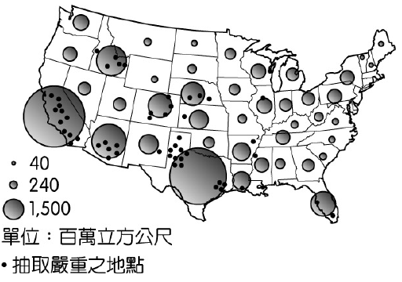
圖為美國地下水抽取量統計圖，圖中抽取最嚴重的地點主要屬於哪一種氣候類型？
正確答案：B
圖中最大的圓（抽取量最多）在西岸南段的加州中央谷地。
加州屬溫帶地中海型氣候：夏季乾燥少雨，而夏季正是作物生長期，只好大量抽地下水灌溉。
選 (B)。
解題關鍵：夏乾的地中海型氣候，農業要靠灌溉 → 地下水抽取量大。
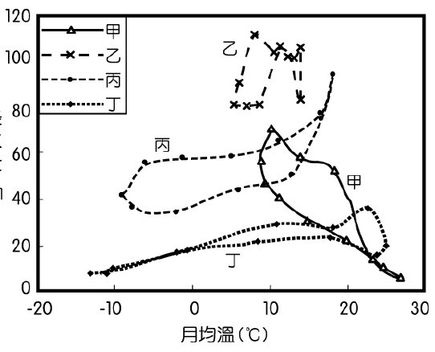
承上題，該氣候類型的降雨分布特徵最接近右圖中何者？（圖的橫軸是月均溫、縱軸是月降水量，每一點代表一個月）
正確答案：A
地中海型氣候：夏乾冬雨 → 氣溫高的月份雨少、氣溫低的月份雨多
在圖上要找「月均溫越高、降水量越低」的曲線：
甲：高溫（約 27℃）時降水接近 0，低溫時降水較多 ✓
丁：高溫時雨多（夏雨型）；乙：全年都很多雨；丙：低溫月份降水普通
選 (A)。
解題關鍵：把「夏乾冬雨」翻譯成圖：溫度高 → 雨量低。
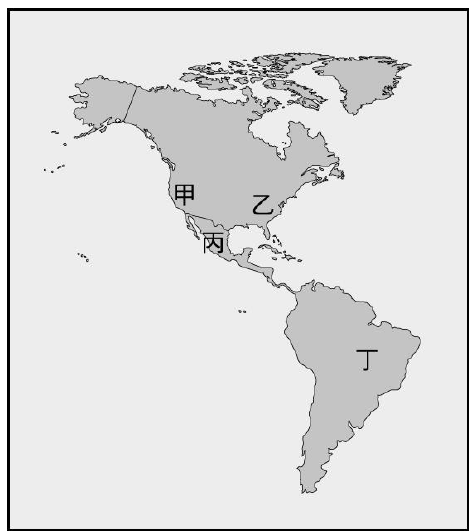
附圖為美洲簡圖，礦產豐富的阿帕拉契山脈，位於圖中何處？
正確答案：B
阿帕拉契山脈在北美洲「東部」，是古老褶曲山脈，煤礦豐富。
圖中乙位在北美洲東部 → 選 (B)。
（甲在中部、丙在墨西哥灣附近、丁在南美洲巴西高原。）
解題關鍵：北美洲：西邊高大的洛磯山（年輕），東邊低矮的阿帕拉契山（古老、多煤）。
美國的黃石國家公園有特殊的地熱噴泉景觀，成為世界著名的旅遊勝地。請根據其地形作用加以判斷，該國家公園最可能位於哪個地理區？
正確答案：C
地熱、噴泉 → 地殼活動、火山作用旺盛 → 年輕的山系
美國西部的洛磯山區屬環太平洋地殼活動帶 → 選 (C)。
(A) 拉布拉多高原是古老穩定的地塊；(B) 大平原地勢平坦；(D) 安地斯山在南美洲。
解題關鍵：地熱、溫泉、火山 → 年輕山系（洛磯山）。
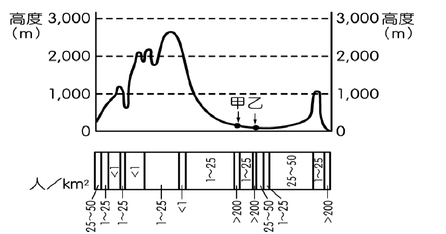
下圖為北美洲東西向的地形剖面示意圖和人口密度資料，其中人口密度最高的甲、乙兩地，最可能是位於下列哪一地區？
正確答案：B
剖面由西到東：左邊高大的山（洛磯山系，2,000～3,000 m）→ 中間低平的平原 → 右邊較低的山（阿帕拉契山，約 1,000 m）。
甲、乙在阿帕拉契山西側的低地，人口密度＞200 人/km² → 工商業發達、都市密集的五大湖地區。
(A) 加州在剖面的最西邊；(C) 阿帕拉契山是右邊的山地，甲、乙不在山上；(D) 中美地峽不在東西向剖面上。
選 (B)。
解題關鍵：剖面圖先找出兩側的山（西洛磯、東阿帕拉契），再定位甲、乙。
圖(一)為北美洲簡圖，圖(二)為行星風系簡圖。
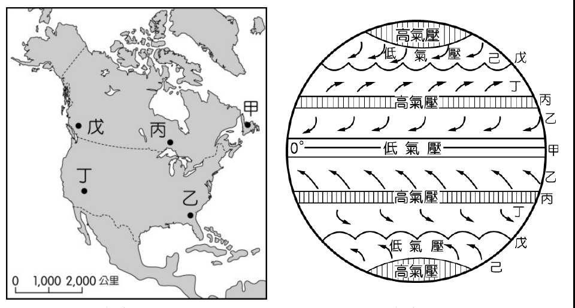
圖(一)中「戊」地的雨量多，與圖(二)中，行星風系中的哪一個行星風帶，關係最為密切？
正確答案：D
戊在北美洲西北岸（約 50°N），位於中緯度。
中緯度盛行「西風」，西風從太平洋帶來水氣，在西岸迎風坡降下大量雨水。
圖(二)北半球 30°高氣壓與 60°低氣壓之間的風帶是西風帶，標示為丁 → 選 (D)。
解題關鍵：中緯度西岸多雨 → 盛行西風。
圖(一)為北美洲簡圖，圖(二)為行星風系簡圖。
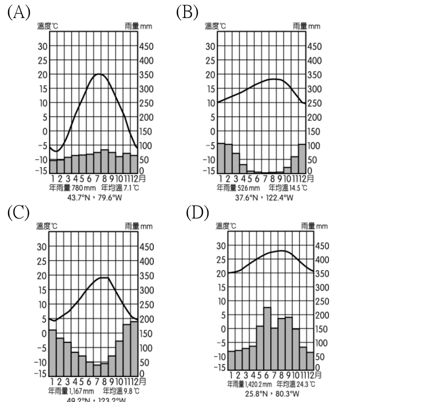
圖(一)中，「乙」的自然景觀帶特色是「天然植被為溫帶常綠闊葉林，氣候條件好，適合農業發展；氣候潮溼，棉花栽種的商業性農業特色顯著。」請問上述的「乙」，可用下列哪一張氣候圖，來表現其氣候類型？
正確答案：D
乙在美國東南部（棉花帶）→ 夏雨型暖溫帶：冬季溫和、夏季炎熱多雨。
(A) 冬季低於 0℃、年溫差大 → 溫帶大陸性（五大湖區一帶）
(B) 夏乾冬雨 → 地中海型（舊金山）
(C) 冬雨較多、夏涼 → 溫帶海洋性（溫哥華）
(D) 緯度低、全年溫暖、夏季雨多 → 美國東南部 ✓
選 (D)。
解題關鍵：讀氣候圖：先看最冷月氣溫，再看雨集中在冬季還是夏季。
圖(一)為北美洲簡圖，圖(二)為行星風系簡圖。
圖(一)中「甲、戊」兩地的冬季溫度有所差異，主要是因為哪一項因素導致？
正確答案：C
甲（東岸紐芬蘭一帶）與戊（西岸）緯度相近，又都在沿海。
戊：受阿拉斯加暖流影響 → 冬季較溫暖
甲：受拉布拉多寒流影響 → 冬季寒冷
造成差異的主因是洋流，選 (C)。
解題關鍵：同緯度、都在沿海，溫度不同 → 看洋流。
圖(一)為北美洲簡圖，圖(二)為行星風系簡圖。
不同氣候類型有各自的氣候特徵，請根據圖(一)中的代號及氣候特徵，在下列敘述中，選出合理的選項？
正確答案：C
(A) ✗：乙（東南部）是夏季多雨；戊（西北岸）才是冬季雨多。
(B) ✗：丁在西部內陸，屬乾燥氣候，雨量少。
(C) ✓：乙受墨西哥灣流（暖流）影響、戊受阿拉斯加暖流影響，暖流增溫增濕，都潮濕多雨。
(D) ✗：戊在沿海，受海洋調節，年溫差小；丙在內陸（溫帶大陸性），年溫差大。
選 (C)。
解題關鍵：沿海＋暖流 → 潮濕、年溫差小；內陸 → 年溫差大。
共 10 題（原卷第 4、6、7、9、12、15、18、21、24、27 題）
重點：美國商業性農業＝地廣、機械化、專業化、商品化、總產量高；工業從東北（近煤鐵）往南部、西部「陽光帶」移動；拉丁美洲裔人口比例持續上升
| 主題 | 重點 |
|---|---|
| 農業帶 | 酪農帶（五大湖東北）、玉米帶、小麥帶、棉花帶（東南）、畜牧帶（西部乾燥區） |
| 工業區 | 東北五大湖（鋼鐵，近煤鐵）、墨西哥灣（石化）、加州（電子、電影）、西雅圖（航太） |
| 族群 | 非洲裔多在東南（棉花帶）、拉丁美洲裔多在西南（近墨西哥） |
| 新移民 | 亞裔科技移民集中在太平洋沿岸（矽谷） |
美國的農業一向有「精準的商業性農業」之稱，下列關於美國農業的特徵，何者正確？(甲)農業耕作方式集約 (乙)耕作機械化 (丙)每塊農田的作物種類多樣化 (丁)作物商品化 (戊)總產量高
正確答案：D
美國地廣人稀，農業特色是：
大規模「粗放」經營，不是精耕細作的集約農業 →(甲)✗
高度機械化 →(乙)✓
專業化（一塊田只種一種作物），不是多樣化 →(丙)✗
作物拿去賣，高度商品化 →(丁)✓
總產量高、大量出口 →(戊)✓
選 (D)。
解題關鍵：美國農業關鍵字：地廣、機械化、專業化、商品化、高產量。
據 2024/10/20 報載：「美國航太巨擘波音公司（Boeing）已與『甲地區』勞工的工會達成初步協議，長達 1 個多月的停工將落幕，協議內容包括 4 年內加薪 35% 以及簽約獎金。」請問：根據美國航空工業的分布推論，甲地區應該為哪一個城市？
正確答案：A
波音公司的主要飛機製造基地在美國西北部太平洋沿岸的西雅圖。
(B) 溫哥華在加拿大，不是美國城市。
選 (A)。
解題關鍵：西雅圖＝航太工業（波音）。
承上題，該市區罷工遊行活動進行的季節，較容易遇到的天氣與氣候狀態為下列何者？
正確答案：B
罷工在 9～10 月的秋季進行。
西雅圖屬溫帶海洋性氣候，受西風與阿拉斯加暖流影響，秋冬盛行西風更強，降雨特別多 → 雨季。
龍捲風在中部大平原、颶風在墨西哥灣與東南沿岸，都不在西雅圖。
選 (B)。
解題關鍵：美國西北岸：秋冬是雨季。
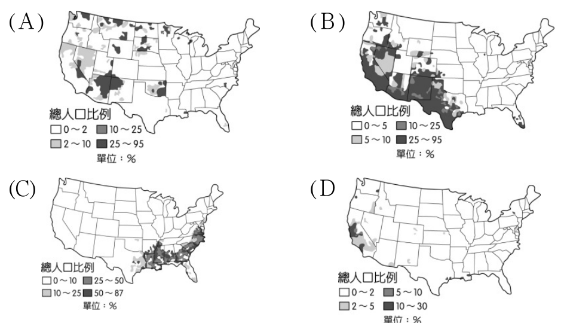
下列四張圖為美國四種少數族群的分布圖，請問哪一張圖為非洲裔美國人的分布圖，此區同時也是美國棉花帶主要分布的地區？
正確答案：C
非洲裔美國人的祖先多是早期被帶到南方棉花田工作的黑奴，所以集中在東南部（棉花帶）。
圖(C) 深色區集中在東南部 → 選 (C)。
（圖(B) 集中在西南、靠近墨西哥 → 拉丁美洲裔。）
解題關鍵：非洲裔＝東南（棉花帶）；拉丁美洲裔＝西南（近墨西哥）。
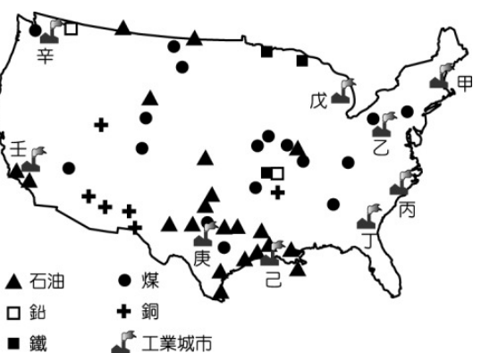
圖為美國主要工業都市與礦產分布，兩者相互搭配便可解釋某些工業區位。請問下列相關敘述何者錯誤？
正確答案：D
(A) 戊在五大湖附近，靠近阿帕拉契山的煤與蘇必略湖的鐵 → 鋼鐵工業屬原料區位 ✓
(B) 壬是洛杉磯，有好萊塢電影工業 ✓
(C) 己在墨西哥灣沿岸（休士頓），有太空中心，屬陽光帶新興工業 ✓
(D) 辛在西北太平洋沿岸（西雅圖），以航太工業為主；石化工業集中在墨西哥灣沿岸產油區 ✗
本題選錯誤的 → (D)。
解題關鍵：石化工業在墨西哥灣（近油田）；西雅圖是航太。
「農場面積在 400 公頃以上，地形平坦，土壤肥沃。農田只種植小麥，而不栽培其他作物，耕作高度機械化。小麥收成後，全部運往市場銷售。」請問此為何種農業類型？
正確答案：A
面積大、只種小麥（單一穀物）、機械化、全部賣到市場 → 商業性穀物農業
選 (A)。
解題關鍵：大面積＋單一穀物＋全部出售＝商業性穀物農業。
| 國家 | 國內棉花生產量 | 國內棉花消費量 |
|---|---|---|
| 甲 | 713.1 | 751.2 |
| 乙 | 675.0 | 508.4 |
| 丙 | 281.1 | 77.3 |
| 丁 | 206.8 | 226.4 |
附表為 2014 年中國、美國、印度和巴基斯坦的棉花生產與消費資料（單位：萬噸）。已知棉花的消費主要用在製造紡織產品，而棉紡織工廠多設置在勞力較為低廉的地方。根據表中資料判斷，何者應是美國？
正確答案：C
美國工資高 → 棉紡織廠少 → 國內棉花消費量很少
美國又是棉花生產大國 → 生產量遠大於消費量，大量出口
丙：生產 281.1、消費只有 77.3，消費約只占生產的 ¼ → 美國
（甲消費＞生產是中國；乙、丁是印度、巴基斯坦，勞力便宜、紡織業多。）
選 (C)。
解題關鍵：工資高的國家紡織業少 → 消費量遠小於生產量。
北美洲的氣候會影響農作物分布，下列哪個農業帶與氣候帶配對正確？
正確答案：D
(A) 酪農帶在五大湖東北，屬溫帶大陸性氣候 ✗
(B) 畜牧帶在西部乾燥的大平原與高原，屬乾燥氣候 ✗
(C) 玉米帶在中部，屬溫帶大陸性氣候 ✗
(D) 棉花帶在東南部，夏季炎熱多雨、生長季長，屬夏雨型暖溫帶 ✓
選 (D)。
解題關鍵：棉花需要高溫多雨、生長季長 → 東南部夏雨型暖溫帶。
2024 美國總統大選，川普成為新任總統，預估將驅逐至少 1 千萬已經待在美國境內的非法移民，並且執行他之前未完成的美墨邊境牆政策，在此之前，美國與墨西哥邊境已經加建邊境界牆與阻止車輛通過的藩籬。此與美國某一族裔的族群比例日益攀高，衍生的種種社會、經濟、政治、選舉、語言與文化問題有關。請問上述某一族裔是指哪一個族群？
正確答案：B
經由美墨邊境進入美國的移民，主要來自墨西哥與中南美洲 → 拉丁美洲裔（西語裔）
拉丁美洲裔已是美國最大的少數族群，比例持續上升。
選 (B)。
解題關鍵：美墨邊境 → 拉丁美洲裔。
根據美國 2010 年的全國人口普查，人口數量比十年前增加了 9.7%，其中人口數量增加的 60% 是因為自然增加，40% 是移民流入的社會增加，移民主要來自印度、以色列和臺灣，在這些移民移入的主要地區之中，大多數是由移民創建或合辦的電子資訊新創公司，主要位於科技業重鎮。請問這些移民最有可能移到美國的哪一個地區？
正確答案：B
電子資訊新創公司的重鎮 → 加州舊金山灣區的矽谷，位於太平洋沿岸。
五大湖區以鋼鐵、汽車為主；墨西哥灣以石化為主。
選 (B)。
解題關鍵：電子資訊、新創 → 矽谷（加州，太平洋沿岸）。
共 4 題（原卷第 28、29、30、31 題）
重點：地震 → 西岸板塊交界；颶風 → 熱帶海洋低氣壓，侵襲墨西哥灣與東南沿岸；龍捲風 → 中部大平原，冷暖氣團交會，春末夏初最多
| 災害 | 分布 | 成因 |
|---|---|---|
| 地震 | 太平洋沿岸（加州、阿拉斯加） | 板塊交界 |
| 颶風 | 墨西哥灣、東南沿海 | 熱帶海面低氣壓 |
| 龍捲風 | 中部大平原（龍捲風走廊） | 冷暖氣團交會，4～6 月最多 |
| 水患 | 大河流域 | 豪雨、融雪 |
下圖中甲～丙是美國龍捲風、地震、颶風、水患等四種天然災害的分布圖，但未依照順序排列，丁是美國水患分布圖，請根據其分布地區與自然環境特徵加以判斷。
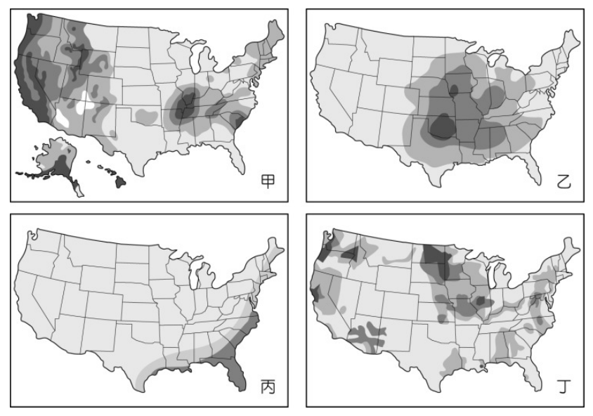
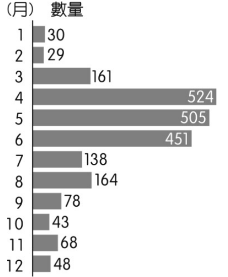
下表為美國某年的某一種天然災害的年統計圖表（各月發生數量）。上面的年統計圖表，最有可能是災害分布圖中哪一種天然災害的統計圖表？
正確答案：B
統計表 4～6 月最多（524、505、451）→ 春末夏初
春末夏初中部大平原冷暖氣團交會頻繁 → 龍捲風
地震沒有季節性；颶風集中在夏末秋初（8～10 月）
龍捲風分布在中部大平原 → 圖乙，選 (B)。
解題關鍵：有季節高峰、4～6 月最多 → 龍捲風。
下圖中甲～丙是美國龍捲風、地震、颶風、水患等四種天然災害的分布圖，但未依照順序排列，丁是美國水患分布圖，請根據其分布地區與自然環境特徵加以判斷。
天然災害分布圖中，何者與板塊的交界帶有高度相關？
正確答案：A
與板塊交界有關的災害是地震。
美國西岸（加州、阿拉斯加）位於環太平洋板塊交界帶。
圖甲深色集中在西岸與阿拉斯加、夏威夷 → 地震，選 (A)。
解題關鍵：地震 → 西岸板塊交界。
下圖中甲～丙是美國龍捲風、地震、颶風、水患等四種天然災害的分布圖，但未依照順序排列，丁是美國水患分布圖，請根據其分布地區與自然環境特徵加以判斷。
天然災害分布圖中，何者的形成原因是因為熱帶海面上的低氣壓造成的？
正確答案：C
熱帶海面上的低氣壓發展成颶風（和颱風同類）。
颶風從大西洋、墨西哥灣登陸，侵襲墨西哥灣沿岸與東南沿海。
圖丙深色集中在東南沿海與佛羅里達 → 選 (C)。
解題關鍵：颶風＝熱帶低氣壓，侵襲墨西哥灣與東南沿岸。
下圖中甲～丙是美國龍捲風、地震、颶風、水患等四種天然災害的分布圖，但未依照順序排列，丁是美國水患分布圖，請根據其分布地區與自然環境特徵加以判斷。
報導：「美國才剛進入龍捲風季節，就傳出重大災情，奧克拉荷馬州一連兩天遭到龍捲風重創，20 日一個直徑 3.2 公里的超級龍捲風，迎頭直擊位於首府奧克拉荷馬市西南部郊區的摩爾鎮，好幾個街區的民宅被夷為平地，其中兩間小學慘遭滅校，現場宛如災難片，目前至少已經有 51 人死亡。」上述報導所指稱的災害，最接近天然災害分布圖中的哪一種災害類型分布？
正確答案：B
報導的災害是龍捲風，奧克拉荷馬州位於中部大平原的「龍捲風走廊」。
龍捲風分布圖是乙 → 選 (B)。
解題關鍵：龍捲風走廊：中部大平原（德州、奧克拉荷馬、堪薩斯）。
共 11 題（原卷第 8、11、13、14、16、17、19、20、23、25、26 題）
重點：中美洲＝中美地峽＋西印度群島；安地斯山區人口集中在涼爽的山間盆地；殖民式經濟依賴單一原料出口；大莊園制度造成貧富差距與都市貧民窟
| 主題 | 重點 |
|---|---|
| 自然景觀垂直分布 | 熱帶高山（秘魯）由低到高：熱帶 → 暖溫帶 → 涼溫帶 → 寒帶 → 雪線 |
| 巴西經濟史 | 巴西木 → 砂糖 → 黃金 → 咖啡（橡膠）→ 工業 |
| 社會問題 | 土地分配不均（大莊園）＋鄉村推力 → 人口湧入都市、貧民窟 |
| 巴拿馬 | 中美地峽最窄處，運河約 80°W、9°N |
| 環境 | 砍伐熱帶雨林 → 棲地減少、CO₂ 增加、土壤侵蝕 |
南美洲的形狀呈「倒三角形」，與下列何種現象的產生最相關？
正確答案：D
倒三角形 → 北邊（熱帶）寬，南邊（溫帶）窄
溫帶地區陸地狹窄，各地都離海不遠，受海洋調節 → 沒有冬冷夏熱的「溫帶大陸性氣候」
選 (D)。
解題關鍵：陸地窄 → 離海近 → 沒有大陸性氣候。
1960 年代以來，墨西哥的北部邊境工業區，吸引了數千家外商投資，創造近百萬的工作機會，墨西哥對外商提供基礎設施及稅務等優惠，並允許免稅出口。此合作模式吸引大量人口移入，卻突顯出邊境都市設施匱乏，環境問題與流行疾病接踵而來，請問促成美墨邊界區成為重要工業所在地，其最重要的原因為何？
正確答案：A
外商（多為美國企業）到墨西哥設廠，主要是看中墨西哥大量且便宜的勞力，再把產品免稅運回美國。
(D) 美墨邊境靠近的是「美國」市場，不是歐盟。
選 (A)。
解題關鍵：美墨邊境加工區＝美國的資金技術＋墨西哥的廉價勞力。
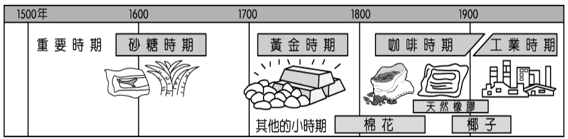
下圖為中南美洲某國經濟發展歷程。根據該國的農業發展特徵，以及各時期主要產業判斷，此國應為哪一個國家？
正確答案：B
砂糖時期 → 黃金時期 → 咖啡時期（加上天然橡膠、棉花、椰子）→ 工業時期
這是巴西殖民時代以來的經濟發展順序：東北沿海種甘蔗、米納斯吉拉斯產金、東南部種咖啡、亞馬孫採橡膠。
(C) 加拿大不在中南美洲。選 (B)。
解題關鍵：甘蔗、黃金、咖啡、橡膠 → 巴西。
安地斯山脈位於太平洋板塊及美洲板塊的接觸地帶，所以地勢高聳崎嶇。人口分布密集區則位於山脈北部的山間谷地，成為重要的聚落所在，這現象和下列哪一個因素的關係最大？
正確答案：C
安地斯山北部在低緯度熱帶，平地終年炎熱潮濕。
海拔升高氣溫下降 → 山間盆地氣候涼爽宜人，適合居住，所以人口集中。
選 (C)。
解題關鍵：熱帶地區「高地涼爽」→ 人口往高處住。
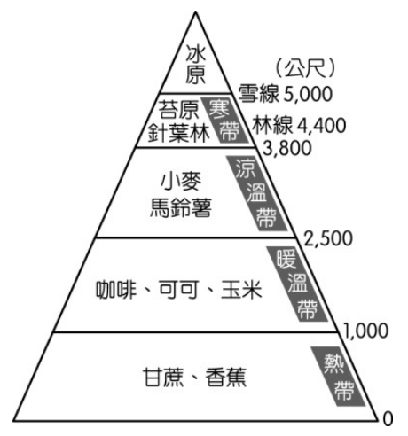
右圖為南美洲某處的自然景觀垂直變化，該地最有可能位於何國境內？
正確答案：D
山腳是熱帶（甘蔗、香蕉）→ 低緯度
雪線高達 5,000 公尺 → 必須是非常高的山
南美洲低緯度又有高山的是安地斯山區 → 秘魯
(A) 巴西以高原、盆地為主，沒有這麼高的山；(B) 巴拿馬地峽沒有 5,000 公尺高山；(C) 墨西哥不在南美洲。
選 (D)。
解題關鍵：熱帶＋5000 公尺高山 → 安地斯山（秘魯、厄瓜多等）。
巴西高原東南沿海地區，氣候溫和溼潤，人口聚集，為巴西的精華地區。請問形成該地氣候類型的主要原因為何？(甲)涼流經過 (乙)暖流經過 (丙)寒流經過 (丁)信風吹拂 (戊)處於盛行風背風側 (己)副熱帶高壓籠罩
正確答案：B
巴西東南沿海：
沿岸有巴西暖流經過 → 增溫增濕 (乙)✓
東南信風從海上吹來，在高原迎風坡降雨 (丁)✓
涼流、寒流、背風側、副熱帶高壓都會讓氣候乾燥，不符合「溼潤」。
選 (B)。
解題關鍵：溼潤多雨的條件：暖流＋迎風。
巴西每年都有數千至數萬平方公里的雨林消失在農業和土地開發之中。砍伐下來的熱帶硬木銷售至美國、歐洲及亞洲各國，而新開闢的土地種植大豆與飼養牛隻，亦外銷全世界。請問下列何者「並非」其經濟發展所造成的環境危害？
正確答案：A
砍伐雨林會造成：
樹木減少，吸收的 CO₂ 變少 → 二氧化碳濃度增加 (B)
地表失去植被保護 → 土壤侵蝕加劇 (C)
動植物失去家園 → 生物多樣性降低 (D)
棲地是「減少」不是增加 → (A) 並非危害，選 (A)。
解題關鍵：題目問「並非」，要找和事實相反的選項。
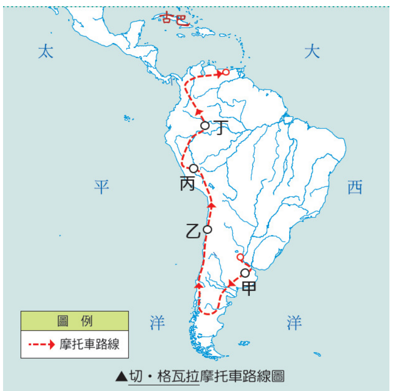
切‧格瓦拉（1928∼1967 年），出生於阿根廷，為著名的革命者。他大學攻讀醫學系時，與友人騎著摩托車遊歷中南美洲。兩人從故鄉阿根廷出發，途經智利、秘魯、哥倫比亞與委內瑞拉等國，騎車路線如附圖所示。以下敘述何者正確？
正確答案：A
(A) ✓：中美洲＝中美地峽＋西印度群島，古巴是西印度群島中最大的島。
(B) ✗：古巴是島國，摩托車騎不過加勒比海。
(C) ✗：古巴地勢低平，屬熱帶莽原氣候，不是高地氣候。
(D) ✗：兩地都是「夏季」多雨；只是南北半球月份相反（古巴 5～10 月、布宜諾斯艾利斯 12～2 月），季節是一致的。
選 (A)。
解題關鍵：中美洲包含西印度群島；南北半球季節相反要分清楚「月份」和「季節」。
「以 1,000 英里的加勒比海和太平洋海岸線，以及數以百計的島嶼，成為海釣的天堂，以及著名的避寒勝地。其為連接北美與南美兩大陸塊的天然陸橋，又擁有北美、中美及南美的各種野生動植物，是美洲生態觀光最理想的據點。」請問以上敘述，最可能是指哪一個國家？
正確答案：B
同時面臨加勒比海和太平洋 → 中美地峽
連接北美與南美的陸橋 → 中美地峽最南端、緊鄰南美洲的巴拿馬
古巴是島國，不是陸橋；巴西、秘魯在南美洲。
選 (B)。
解題關鍵：「陸橋」＋「兩洋海岸」→ 巴拿馬。
巴西的里約熱內盧為著名觀光勝地，鄰近的山丘上有著名的基督像，沿海的狹長海灣更吸引了全世界的遊客前來，然而在極為繁榮的市街中，卻有著為數眾多的貧民區，這種現象在中南美洲相當常見。請問形成當地貧富差距懸殊及人口過度集中的根本原因為下列何者？
正確答案：D
殖民時代留下的大莊園制度 → 土地集中在少數地主手中，多數農民沒有土地
鄉村生活困難（推力）→ 大量人口湧入大都市 → 都市無法容納，形成貧民窟
(A) 種姓制度是印度；(B) 巴西礦產豐富；(C) 中南美洲出生率高、人口年輕。
選 (D)。
解題關鍵：中南美洲貧富差距＝大莊園（土地分配不均）＋鄉村推力。
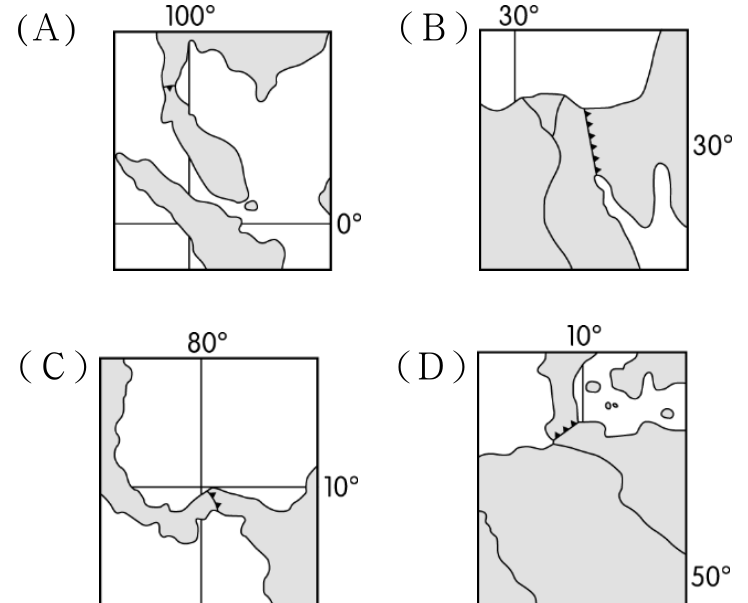
巴拿馬運河總長度 80 公里，其開通使美國東岸到西岸的航程，比繞道麥哲倫海峽，縮短了 5,000～13,757 公里。請問巴拿馬運河位於下圖中哪一個經緯度位置？
正確答案：C
巴拿馬運河在中美地峽最窄處，約 80°W、9°N。
圖(C) 經線 80°、緯線 10° 附近，細長的地峽上有運河 → 選 (C)。
圖(A) 約 100°E、0° 附近是麻六甲海峽一帶；圖(B) 約 30°E、30°N 是蘇伊士運河。
解題關鍵：巴拿馬運河：約 80°W、9°N；蘇伊士運河：約 32°E、30°N。
共 5 題（原卷第 32、33、34、35、36 題）
重點：綠色＝亞馬孫熱帶雨林，黃色菱形＝礦產（鐵礦），首都巴西利亞位於內陸高原；巴西是依賴式、殖民地式經濟
| 主題 | 重點 |
|---|---|
| 亞馬孫盆地 | 熱帶雨林：樹高 40～50 m，垂直分層多 |
| 礦產 | 巴西高原鐵礦，產量與出口量世界前茅 |
| 首都 | 1960 年遷到內陸的巴西利亞，帶動內陸開發 |
| 依賴式經濟 | 單一作物大規模生產、受國際價格影響、結構失衡 |
右圖為南美洲某國家的國旗，由綠色底作為背景，中間有一個黃色菱形，菱形上有一個藍色的圓形，圓形上有 27 顆以南十字星座為中心的白色星星，中央的文字為 Ordem E Progresso，解釋為「秩序與進步」。
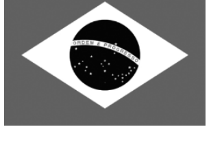
國旗中綠底代表覆蓋國土的茂密森林。請問該森林位於哪一個地理區內？
正確答案：C
這是巴西國旗。巴西國土廣大的茂密森林是亞馬孫盆地的熱帶雨林。
(A)、(B) 不在巴西；(D) 巴塔哥尼亞高原在阿根廷南部，屬乾燥氣候。
選 (C)。
解題關鍵：巴西國旗綠色＝亞馬孫熱帶雨林。
右圖為南美洲某國家的國旗，由綠色底作為背景，中間有一個黃色菱形，菱形上有一個藍色的圓形，圓形上有 27 顆以南十字星座為中心的白色星星，中央的文字為 Ordem E Progresso，解釋為「秩序與進步」。
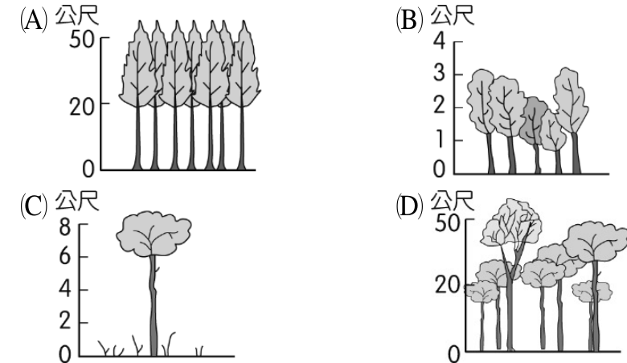
請問該國當地原始的自然景觀與森林覆蓋，較符合下列哪一種類型？
正確答案：D
亞馬孫熱帶雨林：終年高溫多雨，樹木高大（40～50 公尺），常綠闊葉、樹種多、垂直分層複雜。
(A) 針葉林是寒帶／涼溫帶；(B) 矮樹林像地中海型的灌木林；(C) 草原散生樹木是熱帶莽原。
選 (D)。
解題關鍵：熱帶雨林＝高、密、多層、闊葉、樹種多。
右圖為南美洲某國家的國旗，由綠色底作為背景，中間有一個黃色菱形，菱形上有一個藍色的圓形，圓形上有 27 顆以南十字星座為中心的白色星星，中央的文字為 Ordem E Progresso，解釋為「秩序與進步」。
題組敘述的國旗中，黃色菱形象徵豐富的礦產。請問該國以何項礦產資源最為著名？
正確答案：A
巴西高原是古老地塊，蘊藏大量高品質鐵礦，產量與出口量都名列世界前茅。
(B) 銅礦最有名的是智利。
選 (A)。
解題關鍵：巴西＝鐵礦；智利＝銅礦；委內瑞拉＝石油。
右圖為南美洲某國家的國旗，由綠色底作為背景，中間有一個黃色菱形，菱形上有一個藍色的圓形，圓形上有 27 顆以南十字星座為中心的白色星星，中央的文字為 Ordem E Progresso，解釋為「秩序與進步」。
國旗中，圓形中以南十字星為中心的 27 顆星，代表首都與 26 個州。請問該國首都為下列哪一個城市？
正確答案：D
巴西為了開發內陸、平衡區域發展，1960 年把首都從沿海的里約熱內盧遷到內陸高原新建的巴西利亞。
選 (D)。（里約是舊首都，陷阱選項。）
解題關鍵：巴西首都：巴西利亞（不是里約）。
右圖為南美洲某國家的國旗，由綠色底作為背景，中間有一個黃色菱形，菱形上有一個藍色的圓形，圓形上有 27 顆以南十字星座為中心的白色星星，中央的文字為 Ordem E Progresso，解釋為「秩序與進步」。
該國採行依賴式、殖民地式的經濟型態，有許多缺點，下列敘述何者與此種經濟發展特色「無關」？
正確答案：C
依賴式、殖民地式經濟：大規模種植單一經濟作物或開採原料出口（D）→ 價格由國際市場決定、容易波動（A）→ 產業偏重原料、結構失衡（B）。
(C) 沙漠化、乾燥氣候是自然環境問題，與經濟型態無關，而且巴西大部分地區濕潤多雨。
選 (C)。
解題關鍵：題目問「無關」，找出不是「經濟型態」造成的選項。
試題來源：臺北市立仁愛國中 113 學年度第 1 學期第二次段考九年級地理科；答案依學校公布答案卷，詳解為重新整理撰寫。